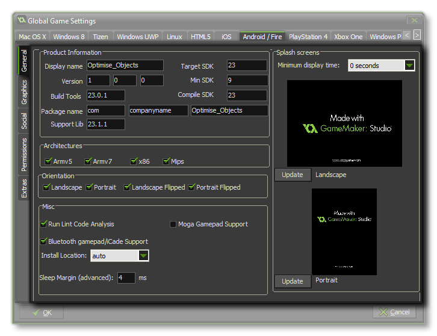
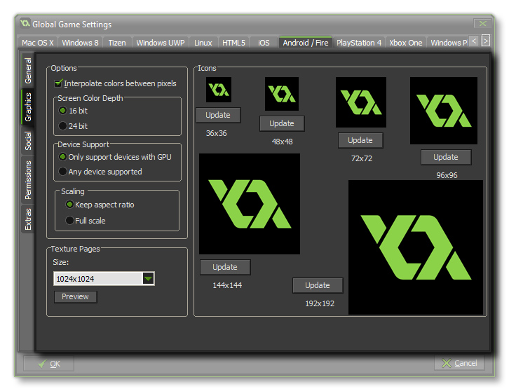
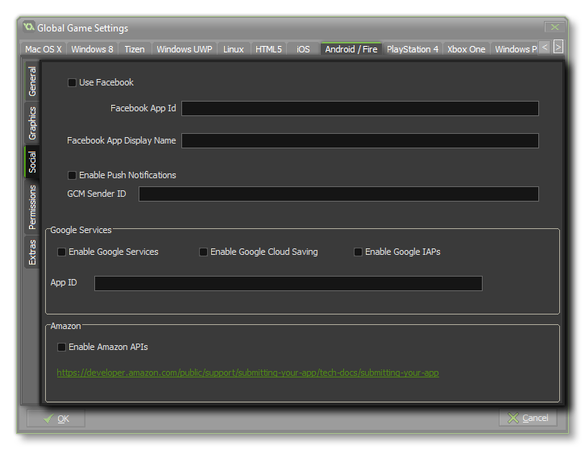
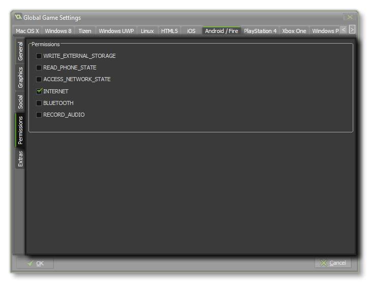
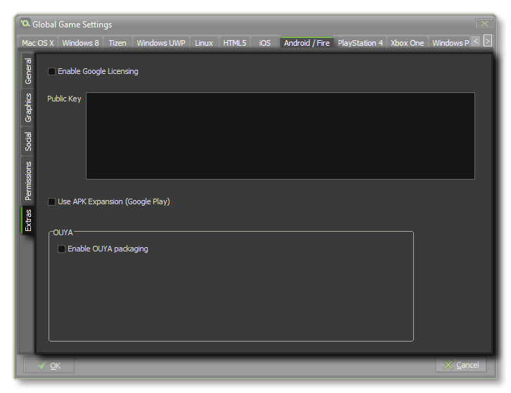

This Android / Fire is for setting up per-project details for the Android or Amazon Fire target modules. The tab is split into various separate sub-tabs (accessible on the left of the window) to make changing and updating the information for your game clearer and less complicated. These tabs are explained in the following sections.
NOTE: If you have any promotional trial version of Amazon Fire but don't have the Android module then you will have a separate Global Game Setting for Amazon Fire. See Amazon Fire Global Game Settings for more details.
 The first part of the General section is dedicated to the Product Information and the Build Settings. You should fill in the Product information, which includes the projects Display Name, its Package Information, which consists of a Domain, Company and Product. The package information can only be made up of letters from A-Z and numbers 0-9, with no symbols or other special characters at all, nor should it have upper-case characters. These details will then be used to generate a Package ID with the format "com.company.myappname".
You then need to set the Target, Minimum and Compile SDK versions. The Compile SDK version is the version of the API that the project is compiled against. This means you can use Android API features included in that version of the API. If you try and use API 16 features - for example - but set Compile SDK 15, then you will get a compilation error. If you set the Compile SDK to 16 then you can still run the app on an API 15 device (as well as all other previous versions too).
The Target SDK, however, has nothing to do with how your app is compiled or what APIs you can utilize. The Target SDK indicates that you have tested your app on (up to and including) the version you specify. This is simply to give the Android OS an idea of how it should handle your app in terms of OS features. For all practical purposes, most apps are going to want to set Target SDK to the latest released version of the API (as used by the Compile SDK setting). This will ensure your app looks as good as possible on the most recent Android devices.
The Minimum SDK version is the minimum API level that will run your project. This is set to 9 by default, and in general this will be fine, but if you add extensions then they may require a higher minimum API level. After that you need to give the Build Tools version, which can be found from the SDK Tools section of the SDK Manager in Android Studio, although note that you will need to check the "Package Details" to see it. If you are using the command line tools it can be found inside the "Tools" folder of the Android SDK Manager.
You also need to get the Support Library to use. Recent versions of the SDK Manager (both the Android Studio one and the Command Line Tools) no longer list these separately and instead they are included as part of the Support Repository, so to target the correct one simply use the initial Build Tools version number (for example, if the build tools are 25.0.2 then the support library would be 25.0.0).
The second part of the General section covers the CPU Architectures to build for, with the following options available (you can select all of them or only those that you require, but note that each one will add to the final size of the compiled apk):
After setting that up you can select the different Orientations that your game can be run on for the best user experience. The available options are:
Finally you have the following Miscellaneous options:
- Enable Bluetooth/iCade support: This will add support for bluetooth or iCade gamepads to your game project. This is on by default.
- Enable MOGA gamepad support: This will enable support for MOGA controllers. Note that all MOGA functionality is accessed via an extension, and when you first check this option you will be prompted to download and install the MOGA extension from the Marketplace. This option is off by default. Find the functions here for GamePad Input.
- Run Lint Code Analysis: When this option is flagged, the build tools will run a lint code analysis on the project as it builds, giving a more in-depth error check and showing more information in the output window as the project compiles (a LOG file will be created too, with the path to the file shown at the end of compiling in the Output Window). Note that not everything flagged by lint analysis as an error is necessarily problematic for your game, and having this enabled may mean that your game no longer compiles, even though when it is off, it will compile and run fine. Essentially this is only for debugging, and the option is off by default.
- Install Location: Here you can set the default Install Location for your game. This can either be set to Automatic, in which case the game will be installed to the location chosen by the user on their device, or it can be set to Prefer External which will always try to install the game to the external storage of the device.
You can also set the Android Sleep Margin here. This
option is related to reducing stuttering when running your game on
specific systems. Basically, if your game is running faster than
your room speed GameMaker Studio 2 will "sleep" for the remaining
time, but this sleep can be quite inaccurate and you can often end
of sleeping for longer than necessary, causing your frame to take
longer which causes stuttering. To get around this we can sleep for
less time, then sit in a tight loop for the remainder of the time
to make it more accurate - although the problem with sitting in a
loop is that it causes CPU usage to increase, which in turn can
cause your CPU temperatures to rise and your fan to run faster. By
default, this value is set to 4, and in 99.99% of the cases you'll
be fine with this, but for low end machines or for machines with a
lot of background processes running this may not be an ideal
solution and a value of 5 up to 10 may be required. Note though
that this is very much a device specific configuration and what
works on your build device may not be appropriate for another user,
and as such if in doubt leave it set to 4. To the right of the
page, you can add a Splash Screen to your APK, for both landscape
and portrait modes, which will be shown while the game loads on the
device. This screen should be a 24bit PNG file, and is recommended
to be the same size as the first room (or view) in your game. If
you require that the splash screen be shown for a specific time
then you can also set it here from 0 to 10 seconds (the default
time of 0 means that it will only show for the duration of the
asset loading).

The graphics tab has three sections to it - Options, Icons and Texture Pages. The first of these controls the display options for your game, with the first one being the Interpolate colours Between Pixels flag. This turns on interpolation, which basically "smooths" pixels, so for crisp pixel graphics, it should be off, but if you have nice alpha blends and smoothed edge graphics it is better left on.
Next, you can set the Screen colour Depth to either 16bit or 24bit. This will affect the compatibility with some older devices if it is set to 24bit, and will also increase the ashmem that is needed (this is the shared memory on Android devices).
The next here is the Device Support for your game. You can choose to support any device, or only those that have a GPU. Basically, if your game has any advanced drawing functions like alpha blending, additive blending, surfaces, etc... you should limit it to those devices that have a GPU otherwise you run the risk of getting negative comments and poor rating for your game due to graphical errors or crashes on older devices.
Finally there is the option for scaling to the device screen. Here you can choose to maintain aspect ratio (so a 4:3 room, for example, will be "letter boxed" on a 16:9) or to scale fully (stretching the image to fit the full screen).
WARNING! Switching off the application surface in your code will disable all the scaling options set in the Global Game Settings until it has been switched back on again. See The Application Surface for further details.
After these options there is the section for setting the size of the Texture Page. The default (and most compatible) size is 1024x1024, but you can choose from anywhere between 256x256 up to 2048x2048. There is also a button marked View which will generate the texture pages for this platform and then open a window so that you can see how they look. This can be very useful if you wish to see how the texture pages are structured and to prevent having texture pages larger (or smaller) than necessary.
NOTE: Be aware that the larger the size of the texture page, the less compatible your game will be.
On the right of the page you can set the game icons. These are
used in various situations on the Store and in your game, and
should be created as 24bit PNG files of the appropriate sizes
given.
 This tab
permits you to enable social functions for your Android game with
either Amazon, Google Play, or Facebook as
well as activate Push Notifications.
If you require the Facebook functions, you need to click the
"Use Facebook" checkbox and then supply the Facebook App
ID and Facebook App Display Name. Note that all Facebook
functionality is accessed via an extension, and when you first
check the Use Facebook box you will be prompted to download and
install the Facebook extension from the Marketplace.
In order for your game to use Push Notifications they must
be enabled here first otherwise they will not work. Local
notifications on Android do not require the "GCM Sender
ID", but you must add it should you wish to create remote
notifications.
If you want to enable achievements and leader boards for the Google
app store, then you need to check the appropriate check box. Once
you have ticked one of the services, you will be prompted to
download and install the corresponding extension from the
Marketplace, and then code the functionality into your game using
the
Achievements and Leader boards functions. Note that if you use
Google Play you will need to add your App Id into
this tab for the services to work (this can be found from your
Google Play Developers dashboard).
If you are using any Amazon Services, you need to tick the
"Enable Amazon API's" checkbox. Once you have ticked this, you will
be prompted to download and install the corresponding extension
from the Marketplace. Unlike previous versions of GameMaker:
Studio, the Amazon API no longer hooks into the built in leader
board functions (like the Google APIs do) but instead has all the
functions included as part of the extension.
NOTE: This also needs to be ticked if you require the use of the Amazon Services along with the Amazon Fire target module.
 From this tab you can change some of the permissions that your game may request within the Android Manifest. GameMaker: Studio allocate permissions automatically as required, however you may find you require a permission for your game that we haven't assigned in which case tick the requisite permission box on the tab. The list below outlines those that are available:
- WRITE_EXTERNAL_STORAGE - Will permit your game to write to external storage.
- READ_PHONE_STATE - Allow read only access to the phone state.
- ACCESS_NETWORK_STATE - Permit your game to access information about networks.
- INTERNET - Permit your game to open network sockets.
- BLUETOOTH - Will permit your game to connect to paired Bluetooth devices.
- RECORD AUDIO - Will permit your game to record audio input from the microphone.
NOTE: If you are not sure that you need these, you should probably just leave them un-checked by default and let GameMaker: Studio deal with the permissions for your game.
 One of the
features of using Google Play for your Android games is the
ability to licence your games. This means that your games
will be controlled by Google so that only people that have
downloaded it through their market will be able to play the game,
thus avoiding illegal copies of your product from getting
distributed.
To activate this function in your game, you must first flag the
Enable Google Licensing box and then copy your Public
Key into the box as shown in the above image. This licence can
be found by going to your Google Play
Developers Page and then selecting the option Edit
profile. Once on the profile page, scroll down to the section
titled "Licensing & In-app Billing" and there you should
find the Public key that is needed for this functionality to be
enabled.
Once activated, if anyone who is not authorised to posses your game
tries to play it, they will be shown a pop-up message box that will
inform them that the Licence cannot be found on their device, and
then give them the option to retry and test again, or exit the
game.
Another feature of Licensing is that your game can then use apk
expansions. This is a way to bypass the 50MB maximum application
size imposed by Google Play (and only Google Play). It will create
your game in two parts: a small *.apk file and a larger
*.zip file which will hold all your games assets, both of
which are uploaded to the store. When the user first runs your
game, the zip will be downloaded and unpacked. You can find further
details of this option here.
Finally, if your game is being created for the OUYA games
console, then you can specify that the final APK should be packaged
in accordance with the console specifications here.